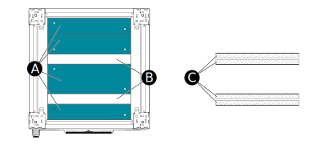

Bottom Gland Plates
The positions of the bottom gland plates (A) and the cable entry slots (B) depends on the system design. For more information see the Drawings.
Foam strips (C) are placed on the sides of the cable entry slots to help prevent particles and dust from entering the cabinet. The cables are then pulled in between the foam strips that seals around them.
